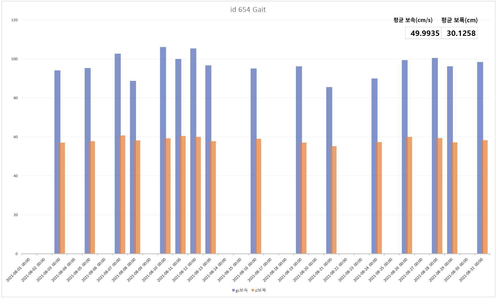
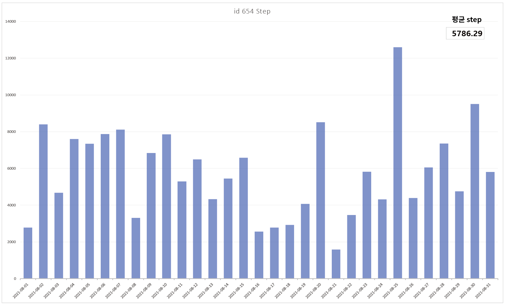

TEAM 세모의 꿈
팀장 22057031 송해미
22157017 서한비
22157067 한새별
22157021 신아영
22057031 송해미
라이프로그 / 데이터의 시각화 자료조사
라이프로그 - 22157067 한새별 / 22157021 신아영
데이터 시각화 - 22157017 서한비 / 22057031 송해미
라이프 로그
한새별
일반적 의미: 개인의 삶에 대한 기록
라이프 로그는 주로 취미, 여가, 건강 등에서 형성되는 개인 생활의 기록을
정리하고 보관하는 서비스이다.
가장 큰 특징은 디지털 기기를 통해 기록하고 저장할 수 있다는 점이다.
개개인 사용자들이 온라인, 오프라인에서 행해지는 모든 활동은 모바일이나
웨어러블 뿐만 아니라 PC나 소비기록 등을 통해 모두 기록되고 있다.
또한 스마트폰의 GPS가 켜져 있는 상태라면 사용자가 이동한 경로,
속도 등을 통해 걷고 있는지, 뛰고 있는지, 차를 타고 이동하는지,
또는 얼마나 잦은 빈도로 해당 장소를 방문하는지, 해당 장소에
방문하는 시간대, 머무르는 시간 등 다양한 라이프 로그 정보의
수집이 가능하다. 따라서 데이터를 수집할 때 라이브 로그가 중요한 역할을 한다.
라이브 로그의 다양한 기능
심장 박동수 체크
생리 주기 추적
수면 패턴 통계
운동량 측정
스트레스 지수 체크
신아영
일반적 의미: 개인의 삶에 대한 기록
라이프 로그는 주로 취미, 여가, 건강 등에서 형성되는 개인 생활의 기록을
정리하고 보관하는 서비스이다.
가장 큰 특징은 디지털 기기를 통해 기록하고 저장할 수 있다는 점이다.
라이프 로그란?
개인의 삶에 대한 기록
라이프 로깅이란?
라이프 로그를 남기는 행위
일상생활(라이프)+접속, 기록(로그)
라이프로그의 특성
연속성 데이터의 수집
위험도 예측이 향상되어 적절한 시기에 개입 가능
라이프 로깅 서비스의 종류
블로그,소셜네트워크 서비스, 유튜브 등 개인의 일상을 기록할 수 있는 매체
라이프로그를 활용한 시스템
사물인터넷
웨어러블 기기
클라우드 컴퓨팅
라이프로그를 활용하는 분야:
의료
스포츠
기술
라이프 로그가 중요한 이유
양보다는 질을 추구하는 요즘 소비자의 특성을 고려하여 개개인에 맞는
맞춤형 제품이나 서비스를 제공하기 위해 라이프 로그를 활용한다.
데이터 시각화는 데이터 분석 결과를 쉽게 이해할 수 있도록
도표라는 시각적 수단을 통해 정보를 효과적으로 전달하는 것을 말한다.
라이프 로그에 대한 문제점
개인정보 침해 우려
라이프로그 장치 및 응용프로그램에 여러 위험이 잠복하고 있음
한 실험의 결과 우연히 마주치게 된 모든 장치들은 스스로 발산하는
특정 하드웨어 주소에 의해 쉽게 추적될 수 있음을 확인.
또한, 라이프로그 디바이스와 연계되는 응용 프로그램(앱)에서
발생하는 보안 위험도 문제가 있다고 확인함.
데이터 시각화
송해미
데이터 시각화 자료조사1/데이터 시각화란?, 데이터 시각화의 장점과 단점
데이터 시각화 자료조사2/ 데이터 시각화의 예시
서한비
데이터 시각화의 개념
데이터 시각화는 데이터 분석 결과를 쉽게 이해할 수 있도록
도표라는 시각적 수단을 통해 정보를 효과적으로 전달하는 것을 말한다.
데이터 시각화의 예시
한국 데이터 산업 진흥원 k/ KDATA -/ 데이터 안심 구역
공공 데이터 포털
공공데이터를 활용하여 다양한 시각화 차트를 만들어 공유할 수 있습니다.
ex> 전기차 등록 현황
연습_평균 온도
지역별 ldl 콜레스테롤
의문 사항
다음시간까지 뭘 해야하는지
평가기준이 어떻게 되는지
프로젝트의 마무리가 어떻게 되는지
교수님이 보내주신 자료의 활용 방법
엑셀의 사용을 어떻게 해야 할 지
최종결과물이 사이트인지
레포트를 보는 대상-보호자
고령자의 정보를 받고 싶어하는 보호자를 위한 레포트
전화나 연락을 잘 받지 못하는 고령자의 보호자를 위함
-서비스를 제공받는 대상을 설정하는 부분을 중심으로 회의
1.웨어러블 기기의 인공지능이 노인이나 지각력이 떨어지는 고량자의
운동량과 생활규칙성을 파악해서 통화 가능 시간를 알림
2.순이 대화 내용을 분석해서 전화 내용 추천
3.사용자 감정 예측 서비스를 이용해서 대화를 이끌어 나갈 방향을 제시한다.
EX>발화자 순이 메세지 : ~님 밥은 맛있으신가요? 의 발화에 반응한
횟수 계산 > 많은 순으로 전화 내용 추천
행동한 일시 + 움직임 + 행동 계산 = 사용자의 최종 상태 계산
= 조합된 메세지의 종류
>발화된 메세지 > 사용자의 대답 > 많은 답을 한 횟수 계산
최종 목적 - 관계 유지 및 개선에 중점.
서비스를 홍보하는 컨셉의 레포트
-아직 서비스를 사용한 지 얼마 되지 않은 사용자를 위해 서비스의
지속적 이용을 더욱 장려하는 내용을 넣는다.
-사용자를 보호자로 선정을 했을 때에는 이 서비스를 지속적으로 사용했을 시 보호자가 더 정확하고 다양한 고령자 맞춤 알림을 받을 수
있다는 점을 어필한다.
웨어러블 기기 서비스 제공
3명 선정 과정
1
id 542-대답/중상, 내용/상
id 5805-대답/중상, 내용/중하
id 5811-대답/중하, 내용/하
id 51008-대답/중상, 내용/하
필수데이터 유무 확인
2
1028-대답/중, 내용/하
id 51033-대답/중, 내용/하
id 51046-대답/중, 내용/상
id 51052-대답/중하, 내용/중상
id 530039-대답/중, 내용중
id 530040-대답/중상, 내용/중
id 530046-대답/상, 내용/상
id 530063-대답/중하, 내용/상
필수데이터 유무 확인
3
id 51012-대답/상, 내용/중하
id 5654-대답/하, 내용/중
id 51052-대답/중하, 내용/중상
id 530039-대답/중, 내용/중
id 530040-대답/중상, 내용/중
id 530063-대답/중하, 내용/중상
id 5486-대답/중, 내용/중
필수데이터 유무 확인
최종 3명 선정
id 30040 m 86
id 486 f 85
id 654 f 70
초기 기준
1. 순이와 대화를 많이 하는 사용자
2. 가만히 있는 시간이 일정한 사용자 (전화 타이밍)
3. 필수 데이터가 모두 포함된 사용자
데이터 조사 후 선정기준
초기에 세웠던 기준과 달리 데이터 조사 후 자료는 초기 기준과 부합하지 않는 자료가 많았음으로
선정기준을 달리 하였습니다.
1. 순이와의 대화가 많은 고령자
2. 대답의 정확성 (대답이 많은 사용자 중 tv소리로 대체된 사용자는 제거)
3. 필수 데이터가 모두 포함된 고령자
운동량
생활 규칙성
순이 대화
3명의 생활 패턴 분석
id 654 f 70 / 이름: 정복
기상 시간-7시~9시 정도 사이 기상
점심 시간-11시~3시 정도 (불규칙적인 식사시간)
저녁 시간-7~8시 정도 (가끔 안드심)
*아침은 잘 안드신다
(한달에 1~2번)
*식사시간 외에는 주방정리
*오전이나 오후 시간에 가끔 실외운동을 하시거나 외출 하신다(한달에 6~7번), 외출을 안하실 때는 낮잠 주무신다 (한달에 3~4번)
*잠을 푹 주무시지 못한다. 중간에 자주 깨시고 가끔은 새벽에 깨서 주방정리 하고 다시 주무심
*복약은 점심, 저녁 식사 이후,
가끔 아침에 드시는 약도 있음(한달에 2~3번)
*티비시청 잘 안하심
(한달에 1~2번)
*대답은 주로 약 복용, 식사시간, 귀가 행동일때 많이 하심
*용변 날짜는 불규칙적(거의 안가심), 시간은 주로 저녁시간
id 486 f 85 / 이름: 금순
기상 시간: 새벽 5-6시, 늦게 일어나면 7시 30분 정도
아침 식사: 8시10분 – 9시 사이
냉장고 정리: 아침,저녁 식사 후 10분정도 정리함, 매일은 아니고 일주일에 2번 정도
간식: 거의 매일 간식 시간을 가짐.
순이 프로그램: 매일 사용하심. 9시에 아침명상, 10시에 순이 체조, 15시 도전 실버벨은 항상 하심.
낮잠: 8월 초는 매일 낮잠 주무심, 8월 중순부터는 낮잠 시간 없음.
저녁 식사: 거의 안 하심. 일주일에 1-2번 드심.
복약: 매일 복약. 시간대는 딱 정해져 있지 않지만 주로 식후에 복약
취침 시간: 10시 56분 – 11시 30분 사이 (중간에 깨는 경우 있음. 12시 20분 이내에 다시 주무심)
순이와의 대화: 자주 하는 편. 대답의 정확도도 어느정도 맞고 순이에게 고맙다 라고 자주 말함.
id 30040 m 86 / 이름: 형규
D정보 정렬 / E정보 정렬 - 프로그램 중점
평균치 계산
평균 step / 4533
평균 gait / 보폭32.5097 / 보폭20.1258
주 행동 분석 (순이와의 대화 중 주로 답변했을 때 행동 양식)
간식먹기 식사판단 m
복약 약 m
주방정리싱크대 m
음식 꺼내기 음식출납 냉장고 m
조식 아침식사 식사판단m
설거지 싱크대 pm
밥솥열기 밥준비 cm
밥솥열기 밥준비 cm
석식 저녁식사 m
주방정리 싱크대 m
환기 창문 m
밭솥열기 밥준비 m
냉장고 정리 냉장고 pm
환기
중식 냉장고 식사판 판단m
창문pb
밥솥열기 밥준비m
왜 이 홍보가 꼭 필요한가
홍보의 대상 (고령자의 보호자)
1. 그저 내용만 전달하는 심심한 레포트 보다는 한 상품을 홍보하는 형식의 레포트를 작성하면
가상 서비스 이지만 그 서비스의 가치를 더 집중해서 볼 수 있을 것 같다.
2. 뭔가 밖에 나가지 않거나 순이에게 욕을 하거나 청소를 하지 않거나 문제가 있는듯한 노령자의 보호자에게 노령자에
그러한 행동에 대한 정보를 제공하고 개선 방안을 함께 제공하면서 노인 복지에 대한 인식을 높이겠다.
고령자의 행동이 어떤것이 잘못되었고 좋은 방향이 무엇인지 보호자도 모르는 경우가 많다고 생각한다.(노인에 대한 인식 오류)
따라서 옳고 좋은 방향을 함께
제시하면서 보호자에게도 노인인식을 좋게 바꿔주는 가치를 설정하겠다.
3. 사용자(보호자)가 어플은 다운 받았지만 고령자에 대한 이해가 부족할 수 있다. 고령자에 대한 이해 없이는 보호자와 고령자 서로에게 힘듦을 안겨줄 수 있다.
-어플을 통해 고령자세대를 이해할 수 있으며 더 나아가 내가 돌보는 고령자를 이해하며 서로에게 더 나은 생활을 만들 수 있다는 것을 알려준다.
4.보호자가 고령자의 곁에 계속 같이 있을 수 없는 상황이 있음
/보호자가 직접 곁에 없어도 상태를 살필 수 있는 수단이 필요
/노인의 건강을 위해서
종합적 의견
왜 이 홍보가 꼭 필요한가
고령자를 향한 인식 개선과 고령자에 대한 전반적인 이해 및 생활의 필수적인 서비스임을 알리기 위해
가치 설정
고령자에 대한 인식 개선, 세대(가족)간의 이해 촉진
고령자 케어의 질 향상
고령자의 정신건강 및 건강 보호/유지
고령자에 대한 인식 계선
고령자와 더욱 원활한 소통을 할 수 있다는 장점
홍보의 방향
우리의 삶에 필수적인 가치를 담은 서비스임을 어필
2021.10.17 추가된 분석 자료
id 654

